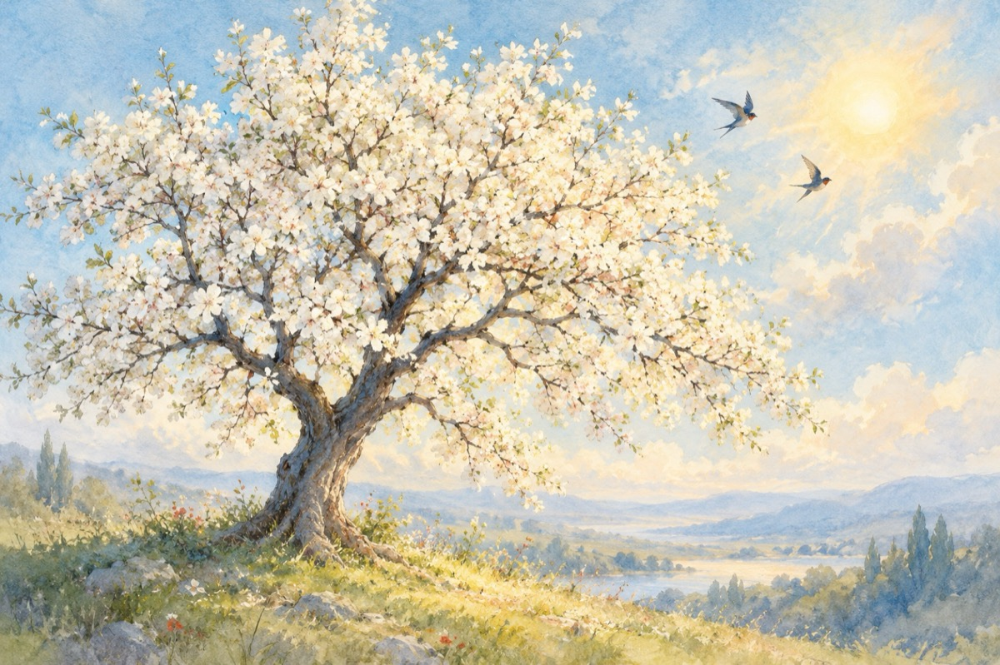

Fericirea
Eclipsa de soare, superluna si echinocțiul de primăvară au venit astăzi 20 martie de Ziua Internațională a Fericirii. Pentru o asemenea ocazie deosebită, iată și a doua poezioara pe care am pregatit-o...
Ce e fericirea oare?
Când iubitul îți oferă-o floare
Când un copil în viața ta apare
Când ai mai prins o zi înălțătoare.
Ce e fericirea oare?
Când ura dintre noi dispare
Când știm dușmanului să-i dăm iertare
Când pacea nu mai stă între hotare.
Când prunul ce-ai născut s-a făcut mare,
Și când speranța ce-i ultima nu moare!...
Ce e fericirea oare?
Este lumina dăruită de la soare…
Ce e fericirea oare?
E o scânteie, e o boare,
Când inima în pieptul tău tresare,
Când știi din viața ta să faci o sărbătoare.
Acesta e răspunsul la marea întrebare!
Vasile Groza
Apare și în: Privește-mă în ochi (2015), Poezii cu animale.